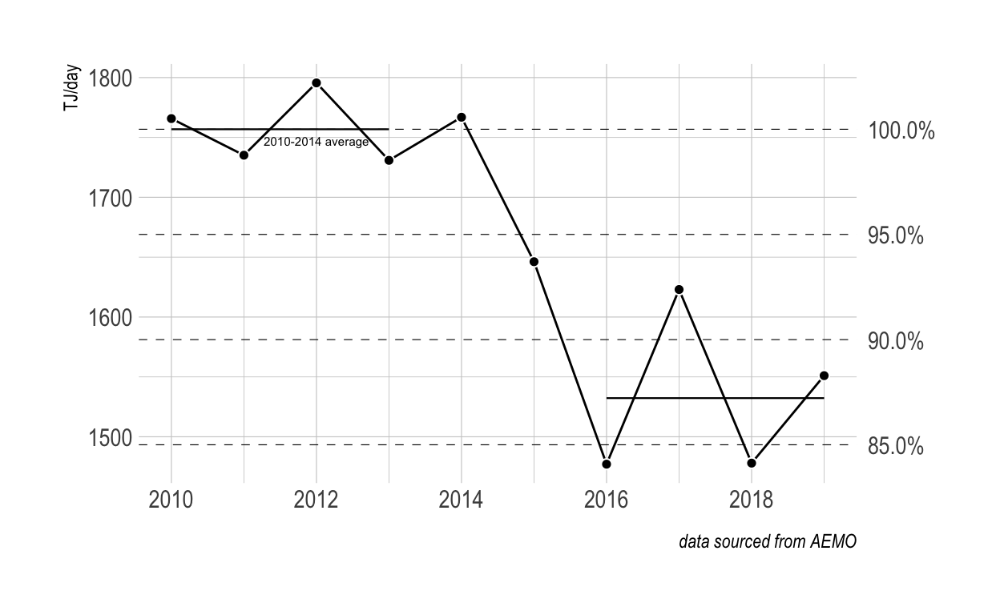
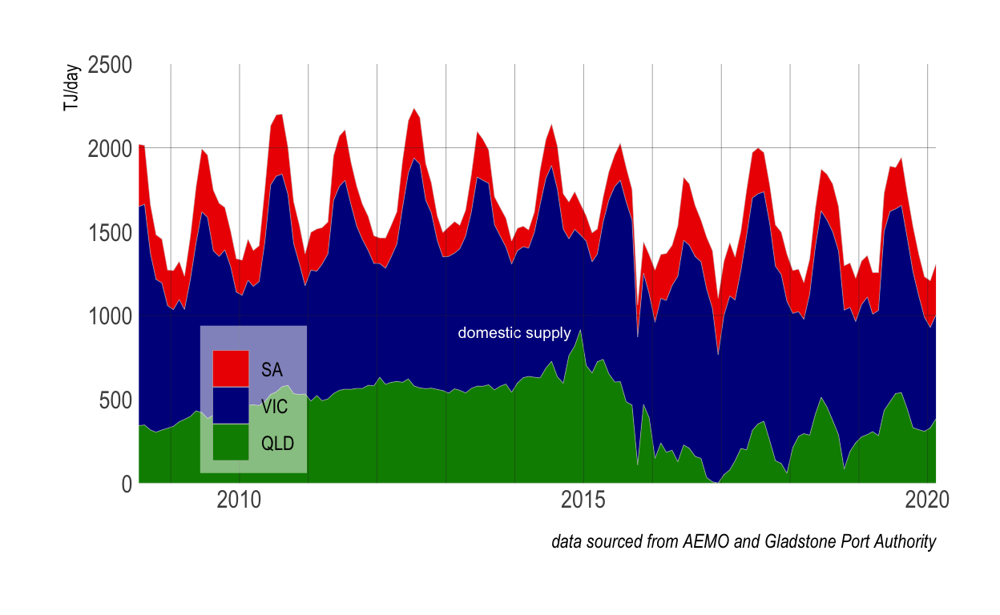
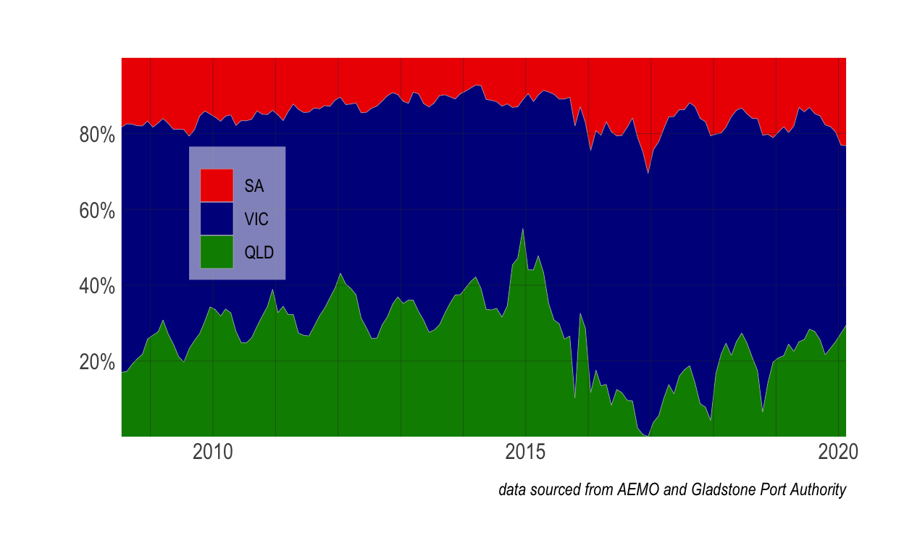

East coast gas supply and domestic reservation
(awork in progress)
Developing the Queensland CSG fields at scale was always going to risk that production would fall short of targets. As much was acknowledged by the joint Department of Industry and Bureau of Resources and Energy Economics study into Eastern Australian gas markets
The current development of LNG in eastern Australia and the expected tripling of gas demand are creating conditions that are in stark contrast to those in the previously isolated domestic gas market. The timely development of gas resources will be important to ensure that supply is available for domestic gas users and to meet LNG export commitments. Such is the scale of the LNG projects that even small deviations from the CSG reserve development schedule could result in significant volumes of gas being sourced from traditional domestic market supplies
And so it was, as I have written elsewhere.
The implication for the electricity markets has been profound, contributing directly to a doubling in wholesale market prices across 2016, amounting to a nominal increase in market value of some $14 billion over the year or ~$580 for every Australian.

So what went wrong?
In a word, the opening of the LNG export market meant domestic supply fell over 10%, from about 1760 TJ/day to around 1550 TJ/day, and has not recovered.

That represents a huge tightening of domestic supply which has seen a dramatic incresse in gas prices, that has flowed through the economy including into the electricity markets, as predicted by Department of Industry and Bureau of Resources and Energy Economics back in 2013.
The question that motivates the analysis here is what amount of reservation of Queensland CSG (coal seam) gas production would have been needed to presreve domestic supply at pre-2015 levels (i.e., prior to opening of the LNG export facility at Curtis Island, Gladstone).
The short answer is about 7% of the total gas that now flows to Gladstone’s Curtis Island to be exported or used in th processing of that exported gas.
Data sourced from AEMO and the Gladstone Port Authority (GPA).
Total gas production by state
Note that NSW is neglected since it’s contribution to east coast gas supply is very small, in th order of one percent.
The key feature of the east coast market dynamics was the increase in production in 2015 & 2016, from an average of around 1760 TJ/day to ~5000 TJ/day, due to increased production in the Queensland CSG fields.

In the figure above
- the gas export as reported by the GPA is shown in the yellow line, and
- the gas delivered into the Curtis Island Demand Zone is shown in the white line.
Because the GPA exports are reported by month and are “quantised” by cargo departures on a >1 day cycle, monthly averages shown here are approximated by applying a smoothing filter on reported monthly values (namely 1/6*previous.month + 2/3*current.month + 1/6*subsequent.month).
Also, the Curtis island pipe deliveries are not aggregated in the AEMO data prior to November 2015. For the period January 2015 to October 2015, I approximate this as the smoothed export volume multplied by the ratio 1.155. This ratio, which represents the average of the Curtis Island Demand Zone inflows to exports for the period post October 2015, is the loading factor associated with LNG processing.
Note-
- The ratio of demand to export is about 1.155 suggesting a parasitic load of about 16% of LNG processing at Curtis Island.
- while QLD production is relatively constant, the exported flows have tended to be high in summer than winter.
The changes in gas production are reflected in percentage contubutions, with QLD increasing from ~20% in the winter of 2010 to more than ~&5% of gas production in the winter of 2019. Summer contributions of QLD production are typicallly 5-10% higher reflecting the larger industrial demand proportion relative to southern states(see below).
Subtracting the Curtis Island demand from QLD production gives the balance supplied into the domestic market.
Note-
- the restricted domestic supply in late 2016.

Domestic demand shows a stong seasonal variation due to the historical use of gas for winter heating in the southern states, with peak production historically at slightly aove 2000 TJ/day.
Note
- steady reduction in the peak supply to < 2000 TJ/day is evident since the winter of 2014, reflecting a significant tightening of the domestic supply.
- neglible contribution of QLD supply to the domestic markets in late 2016.
- a stronger seasonalality in QLD domestic supply, due more to variation in exports than to production

The proportional contributions of supply to the domestic market highlight marked declne from Queensland.

The total contributions with 8% reservation of exported gas including processing loads.
The proportional contributions with 8% reservation of exported gas including processing loads.
The reusultant annual supply balance expressed in terms of percentage of reservation of exported gas including processing loads.